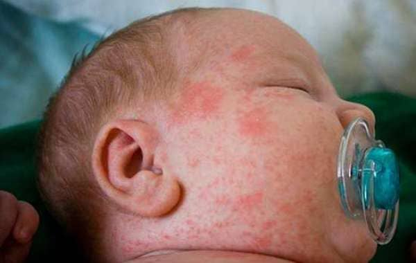

Ладно, хватит о грустном. Я сказал, что лихорадка обычно является симптомом безопасных заболеваний, которые проходят сами. Классическим примером такой самопроходящей болезни является детская розеола, она же внезапная экзантема.

Детская розеола – бурное, но безобидное заболевание, обычно поражающее детей в возрасте от шести месяцев до двух лет, крайне редко может встречаться у детей старше двух лет и у взрослых.
Это заболевание имеет чрезвычайно широкую распространенность, и к моменту поступления в детский сад почти 100 % детей имеют антитела к его возбудителю, то есть переболели этой инфекцией. Однако, как это ни парадоксально, многие российские педиатры не знают о существовании этого заболевания, пытаются лечить его антибиотиками и/или противовирусными препаратами, а когда появляется типичная сыпь, расценивают ее как аллергию на эти препараты и ошибочно запрещают вводить эти препараты ребенку впредь. Это очень грубая и очень обидная ошибка, и я надеюсь, что моя книга будет способствовать ее устранению.
Детская розеола вызывается двумя распространенными штаммами вирусов из семейства герпес-вирусов. В типичных случаях заболевание проявляется только высокой лихорадкой в течение 3–5 дней, затем лихорадка снижается, и через сутки появляется яркая розеолезная сыпь (красные неяркие пятна от 2 до 10 мм в диаметре, пропадающие при растягивании кожи или при давлении на сыпь стеклом).
Некоторые дети имеют лишь легкое повышение температуры и минимальную бледную сыпь, тогда как другие дети болеют с лихорадкой до 41, фебрильными судорогами и чрезвычайно яркой сыпью.
Как бы тяжело ни текла детская розеола, она совершенно безопасна. Осложнения крайне редки и, как правило, ограничиваются фебрильными судорогами. Лечение детской розеолы включает в себя постельный режим, обильное питье и лекарства для снижения температуры. Главной целью постановки диагноза является исключение более тяжелых заболеваний.
Инкубационный период обычно составляет от одной до двух недель. Избегание контакта с остро заболевшим ребенком может предотвратить заболевание детской розеолой, однако проблема в том, что далеко не всегда заболевание течет ярко и заметно даже для родителей больного ребенка.
СИМПТОМЫ ДЕТСКОЙ РОЗЕОЛЫ:
✗ лихорадка. Болезнь обычно начинается с внезапного повышения температуры, нередко до 39–40 °C. У некоторых детей может также отмечаться легкая боль в горле, насморк или покашливание, возникающие до начала лихорадки или одновременно с ней. У ребенка могут увеличиваться лимфатические узлы в области шеи до или во время лихорадки. Иногда бывает временное разжижение стула. Лихорадка обычно продолжается от трех до пяти суток;
✗ сыпь. После того, как температура приходит в норму, как правило, появляется сыпь. Сыпь состоит из множества мелких розовых пятен и напоминает краснуху. Эти пятна, как правило, не ощущаются пальцами, но иногда могут быть и приподняты над уровнем кожи. Они пропадают при растягивании кожи или надавливании на них стеклом стакана.
Обратитесь к врачу повторно, или вызовите скорую помощь, если:
• у ребенка держится температура выше 40 °C и вам не удается ее снизить;
• ребенок болен детской розеолой, но лихорадка длится более пяти-семи суток;
• сыпь не пропала через три дня после появления.
Вокруг некоторых элементов сыпи могут быть белые кольца. Первые элементы сыпи обычно появляются на груди, затем сыпь распространяется на шею, лицо и конечности. Нередко сыпь ограничивается только туловищем и, не успев достичь лица и конечностей, пропадает.
Сыпь не причиняет дискомфорта или зуда, однако дети на это время обычно становятся резко капризными и «несносными»; сыпь длится от нескольких часов до нескольких суток, а затем исчезает, не оставляя пигментации или шелушения.
Только эти два симптома, лихорадка и сыпь, являются для детской розеолы типичными. Остальные признаки неспецифические и возникают не всегда:
✗ усталость, разбитость, слабость;
✗ раздражительность и плаксивость;
✗ легкая диарея;
✗ насморк;
✗ снижение аппетита;
✗ отекшие (опухшие) веки.
КОГДА ОБРАЩАТЬСЯ К ВРАЧУ
Если у ребенка лихорадка без катаральных явлений (насморка и кашля), обратитесь за помощью к врачу. Есть масса иных, более опасных заболеваний, которые могут вызывать высокую лихорадку. Однако если врач осмотрел ребенка, не нашел никаких симптомов иных заболеваний, заподозрил внезапную экзантему и назначил лишь жаропонижающие и отпаивание – слушайтесь его и не давайте ребенку других лекарств.
Если врач подозревает у вашего ребенка детскую розеолу, а у вас есть иммунодефицит (ВИЧ-инфекция, вы получаете химиотерапию и т. д.) – напомните о своем заболевании врачу, поскольку в таком случае детская розеола может быть весьма опасна для вас.
Детскую розеолу бывает довольно сложно диагностировать в первые дни, поскольку ее симптомы схожи с другими болезнями, часто встречающимися у детей.
Если у ребенка лихорадка и врач исключил ОРВИ, инфекцию уха (отит), воспаление горла (ангину), пневмонию, пиелонефрит и другие частые причины, он назначит ребенку только жаропонижающее и обильное питье и предупредит вас о том, что вскоре может появиться яркая сыпь. Когда врачу не удается исключить более опасные заболевания после физикального осмотра, он может назначить общий анализ крови, общий анализ мочи, анализ крови на С-реактивный белок, рентгенограмму легких и другие дополнительные тесты и анализы.
Не применяйте для снижения лихорадки Аспирин (из-за риска синдрома Рея) и Нимесулид (из-за риска лекарственного гепатита), если ваш врач не назначил вашему ребенку именно эти препараты.
Обычному ребенку, больному детской розеолой, не нужны никакие противовирусные препараты. Противовирусный препарат ганцикловир способен подавлять вирусы герпеса 6-го и 7-го типа, однако он слишком токсичен, чтобы назначать его обычным детям: вред от него будет превышать пользу. Он показан только при наличии тяжелого иммунодефицита, так как в этом случае у ребенка повышен риск возникновения вирусного энцефалита. Антибиотики абсолютно неэффективны при лечении вирусных заболеваний, в том числе и при лечении детской розеолы.
(Сергей Бутрий "Здоровье ребенка: современный подход")